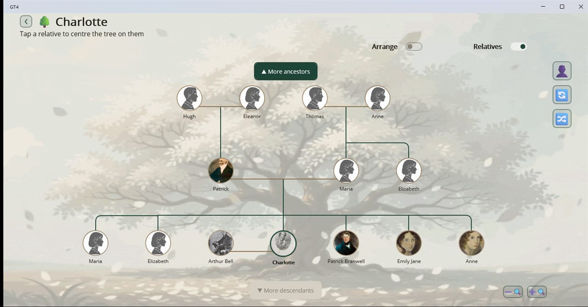
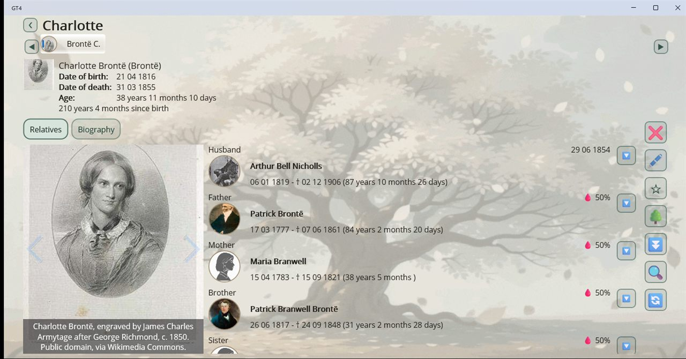

Your family history, on your own device
Genealogy Tree is a family tree app with no account, no server and no subscription. A project is a single file you can copy, back up or move like any other document, and the app never sends anything about your family anywhere.

Start in a minute
New here? Open the built-in demo tree, a small, real genealogy of the Brontë family with portraits and biographies, and click around before you type a single name. Already have research elsewhere? Import a GEDCOM file and your tree is there.
What it does
Family tree
Ancestors and descendants laid out as a tidy pedigree. Re-centre on any relative, load more generations, zoom and pan.
A page for every person
A main portrait and more photos, a formatted biography, and attachments such as scans, certificates and PDFs, each with its own caption.
Kinship finder
Pick any two people and get the relationship plus the full chain of relatives that connects them.
Date calendar
Who was born, married or is remembered on any day of the year, with round-number anniversaries flagged.
Statistics
Over twenty measures: lifespans, births by decade, common first names, and where your data is still thin.
GEDCOM 5.5.1
Import from and export to other genealogy software. Tags the app doesn't model are carried through rather than dropped.
Share as a website
Export the whole project as a self-contained HTML site, a page for every person and family, that opens in any browser.
Dates as you have them
"About 1816" and "unknown" are real values. Display dates in the Gregorian, Julian, Hebrew or French Republican calendar.
Comfortable to read
Light, dark or system theme, app-wide text scaling, and five interface languages: English, Russian, German, Spanish and French.


Your data stays yours
Genealogy Tree has no account system, no cloud sync, no analytics and no ads. Your projects are ordinary files in your Documents folder. The only time the app reaches the internet is when you put a web link or a web image into a biography and then open it. The privacy policy has the details.
Free and open source
Genealogy Tree is open source under the Apache License 2.0. The source code, release packages and issue tracker are on GitHub.